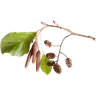

Correspondence Grimoire
Death

AlderAmaranthAniseDeath Spells: Death, Ghosts, Necromancy & Vampires
A lot of correspondences are to acknowledge or deal with death, not representative of death itself.
Beyond Physical Death
While the progression from birth through life to death appears final, many practitioners understand death as a doorway rather than a wall. The soul or essential self passes into realms beyond the physical, continuing its journey. This perspective appears across cultures and faiths. Christians and Muslims hold beliefs about the afterlife, Hindus have embraced reincarnation for millennia, and many witches share similar views about the soul's continuation.
The Body and Its Disposal
Although few today aspire to the elaborate funeral preparations of the Ancient Egyptians, whose preoccupation with the Afterlife shaped much of their culture, the disposal of the body remains an important rite of passage. Funeral rites are arguably carried out as much to comfort the living as to offer any certainty about what follows. Ultimately the body is the symbol of the person who remains once the spark of life has left, effectively the grail that holds the spirit, and the way it is laid to rest reveals much about the philosophies of those who take part.
Death is an inevitable part of life, an ending and a completion, yet symbolically it is also a marker of change and so a new beginning. It is the ultimate initiation and the supreme mystery, and it is little wonder that it continues to fascinate us.
The question of what follows physical death has preoccupied people since the dawn of time. This longing for something "else" led Paleolithic people to daub their dead with red ochre, in the fervent hope that the color, the same as life-giving blood, might somehow restore life or call back the soul. The Egyptians famously buried their dead with everything they might need in the next life, honoring the corpse in elaborate ritual that preserved the organs and smothering the mummy with talismans, amulets, and magickal devices meant to ease the journey into the Afterlife and propitiate the Gods met along the way.
Rites of Disposal
The way bodies are disposed of often has a practical side, owing as much to topography and climate as to any deeper meaning. Burial is among the most common forms, dating back some 200,000 years, and burial mounds appear all over the world. Cremation, or disposal by flame, is the preferred method in India and Japan. Some traditions seek to preserve the corpse for as long as possible in elaborate, well-sealed coffins, while others prefer that decomposition happen as quickly as possible, the body wrapped in a simple shroud. As with the Ancient Egyptians, some of the dead are buried alongside the possessions they enjoyed in life, objects that have given archeologists great insight into our ancestors.
What future archeologists will make of eccentric burials like that of Mad Jack Fuller is anybody's guess. Fuller was buried in a 25-foot pyramid in the grounds of the village church at Brightling, Sussex, allegedly seated in full evening dress at a table set with a roast chicken and a bottle of claret, the floor around him strewn with broken glass to stop evil spirits stealing his dinner.
In some ancient cultures warriors were buried upright, presumably to show their readiness for battle even in death. Suicides were sometimes buried upside down as a continuance of punishment, and the bodies of those feared likely to be restless in the Afterlife were buried at crossroads, to confuse them.
One of the most dramatic forms of disposal is the sky burial, thought to have been practiced first by the Zoroastrians and once common in Tibet. The corpse is left to the elements on high places, often on specially built structures known as Towers of Silence, and is sometimes carefully dismembered and given to the vultures, regarded as birds of rebirth. Here the body is seen as an empty vessel, no longer connected to the departed soul. The custom is itself dying out, owing to the great expense of the ritual.
One ritual that follows a funeral across nearly every culture is the feast shared by the living. More than a celebration of life, it harks back to the ancient practice of sin-eating, in which the transgressions of the departed were symbolically "eaten" by the guests so that the soul might rise unencumbered. As recently as the nineteenth century there were still "professional" sin-eaters in the UK, often an impoverished and hungry person willing to take the role.
Religious Associations
Opinions about what happens after death differ widely, and even within a single faith its tenets may be understood on many levels. A fundamentalist Christian, for example, might picture a Heaven "up there" for the virtuous soul and a Hell in the lower regions for the wicked, though such a simple scheme raises profound questions about the nature of good and evil in a faith whose deity is held to be wholly benevolent and the creator of all things. Some form of reincarnation was the generally accepted belief across most of the world before the spread of Christianity, whose system of punishment and reward could also serve as a political tool.
In orthodox Jewish and Muslim practice, decomposition is allowed to proceed quickly, the body wrapped in a simple shroud rather than sealed away. Most Christian burials lay the corpse flat on its back, arms crossed over the chest and oriented east to west to echo the layout of a church, while Muslims are buried with the face turned toward Mecca. To be buried in unconsecrated ground, outside Church-approved earth, was long regarded as a punishment in itself.